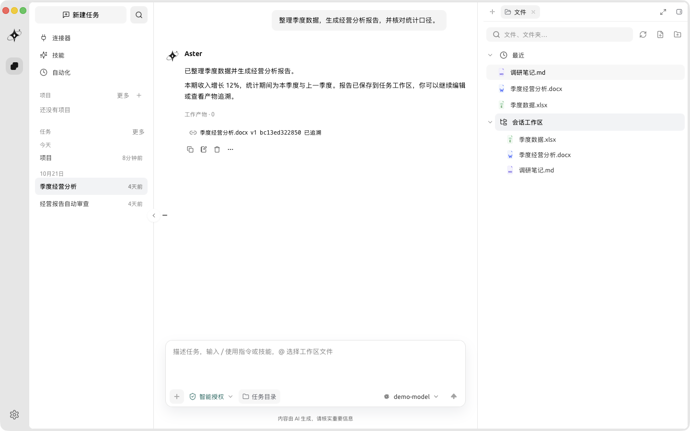
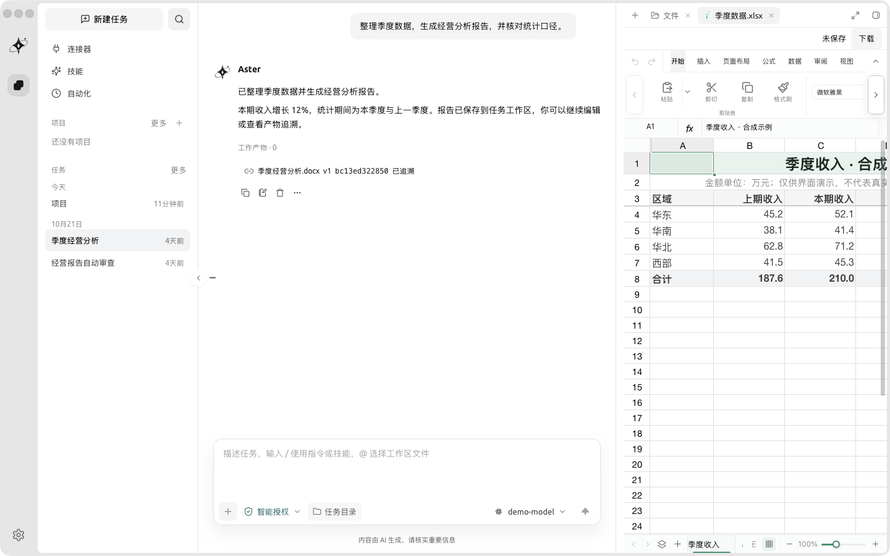
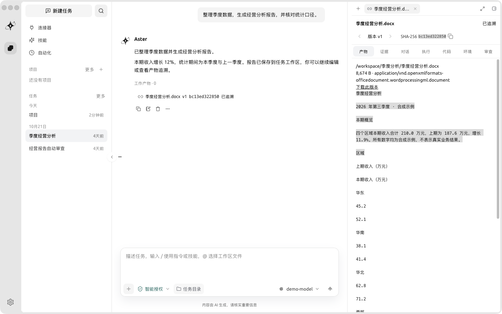
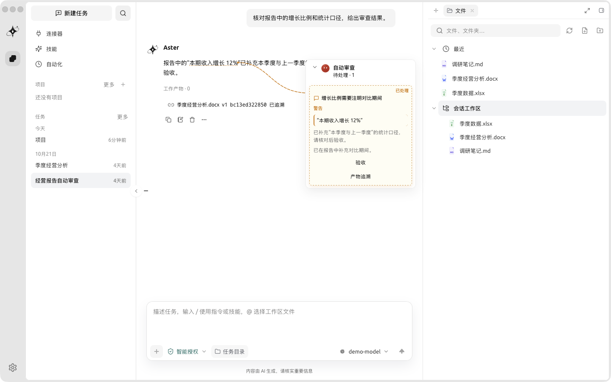

深度调研
从查资料到给结论，
交付可核验的报告
连接你配置的检索工具，拆解研究路径、核对信息，再把报告与执行过程一起留在项目里。
- 任务路径清晰可审阅
- 资料与产物保持关联
- 结果交给你最终验收
ASTER AGENT WORKSPACE
从模型提案，到可验证的任务交付。
连接你的本地文件、模型和工具，在一个工作区里规划、执行、审查。

AI 场景 AI SCENARIOS
把任务交给 Aster，它会围绕目标规划步骤、调用工具、生成产物，并把过程与结果留给你审核。
深度调研
连接你配置的检索工具，拆解研究路径、核对信息，再把报告与执行过程一起留在项目里。
文档与演示
打开项目里的 DOCX、XLSX、PPTX 就地编辑，也可以阅读 Markdown 与 PDF，成果始终留在工作流程中。

数据与脚本
用受控的命令和工具处理数据、生成脚本，并通过产物快照与执行记录核对来源、内容和版本。

编程开发
在真实项目里读取和修改文件，工具调用先经过权限判定；修改完成后，用对应验证证据约束交付。

开放连接 YOUR WORKFLOW
你的模型，你的工具，你的项目。无需把工作流程拆散到不同产品里。
项目上下文
由你配置
真实代码库
编辑与阅读
受控执行
嵌入你的应用
一套权限与记录，贯穿不同任务
安全与可控 PRIVACY & CONTROL
从权限判定到验证完成，Aster 把执行边界与过程证据放在同一条任务链路里。
工具调用先经过权限判定，需要确认时等待你的回答。项目目录也不替代宿主策略与沙箱边界。
模型、工具和控制事件写入同一份日志。组件据此计算状态，让执行过程可检查、可恢复。
发生修改后，需要与本次修改对应的验证报告，或由宿主显式豁免，再判定任务能否完成。
模型服务与凭据由你配置，Aster 不内置模型服务。
开源开始 · 无限可能 GET STARTED
选择你的工作方式。桌面工作区、Aster CLI，或嵌入自己的 Rust 应用。
./aster --cwd /path/to/project
CLI 发布包包含 aster 与 a3s-code-acp，请放在同一目录并成对更新。